| 1 |
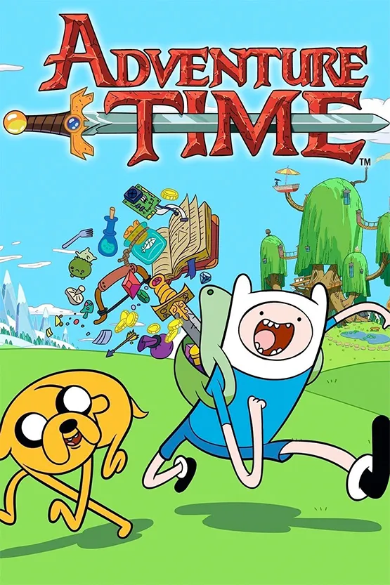
Adventure Time |
Bonnibel Bublegum (princesse) |
biologiquement 19 ans (mais beaucoup plus...) |
- Neddy
- Gumball
- Chicle
- Lolly
- Goliad
- lemongrad (*3)
|
- Elle a des cheveux rose en chewing-gum.
- Elle est la princesse du royaume des bonbons.
- Elle peut créé des bonbons avec ses mains.
- C'est une scientifique de génie.
|
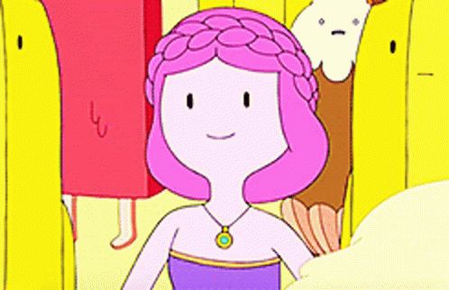 |
| 2 |
Gunter |
?? |
- Il est peut-être diabolique.
- Il aime faire tomber des bouteilles en verre.
|
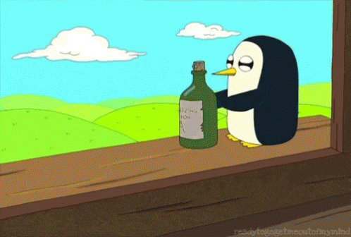 |
| 3 |
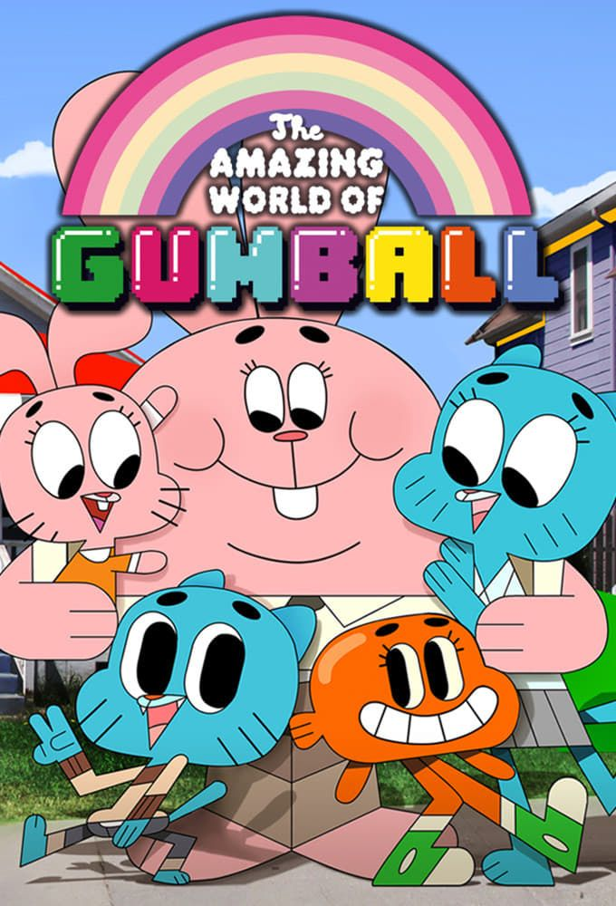
Le monde incroyable de gumball |
Anaïs Waterson |
4 ans |
- Gumball
- Darwin
- Richard
- Nicole
|
- Elle est très intelligente.
- Elle a du mal à se faire des amis.
- Elle aime sa peluche.
|
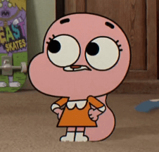 |
| 4 |
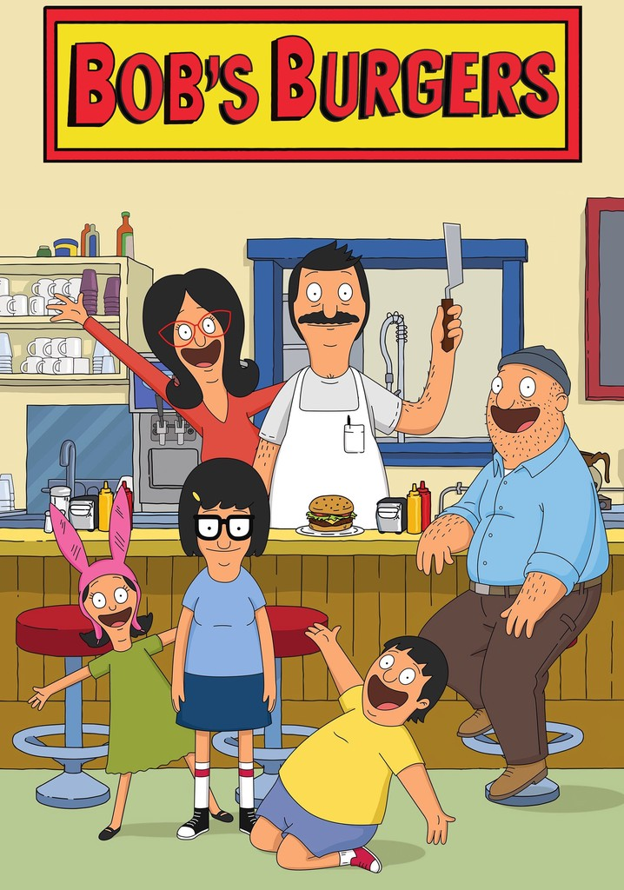
Bob's Burgers |
Bob Belcher |
44 ans |
|
- Il aime faire des blagues de burger.
- Il n'aime pas parler avec des gens.
- Il a peur de perdre son restaurant.
|
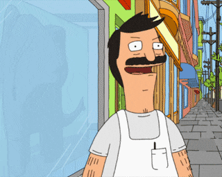 |
| 5 |
Linda Belcher |
44 ans |
|
- Elle aime chanter.
- Elle est capable de devenir amie avec tout le monde.
|
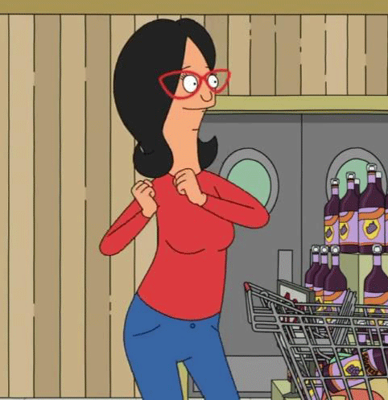 |
| 6 |
Tina Belcher |
12 ans |
|
- Elle aime les garçons (et leurs fesses).
- Elle aime les zombies.
- Elle aime écrire des histoires erotiques sur les garçons et les zombies.
|
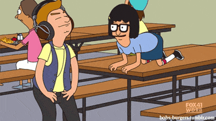 |
| 7 |
Gene Belcher |
11 ans |
|
- Il aime faire de la musique avec des bruits de pets.
- Il aime faire son show.
|
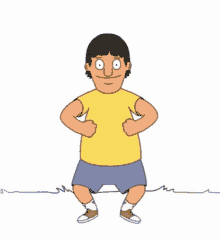 |
| 8 |
Louise Belcher |
9 ans |
|
- Elle aime imaginer des plans machiavéliques.
- Elle ne quitte jamais ses oreilles de lapins.
- Elle arrive toujours à ses fins.
|
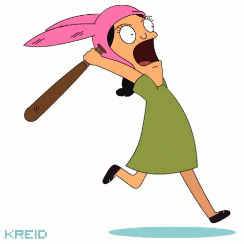 |
| 9 |
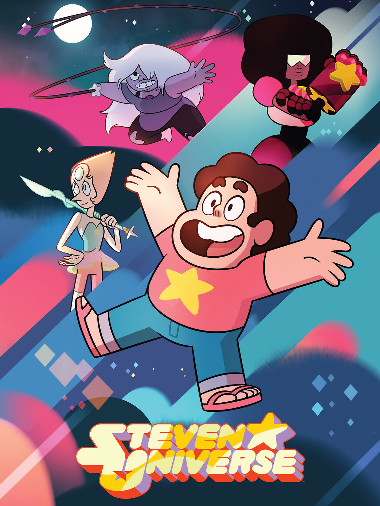
Steven Universe |
Peridot |
environ 3 000 ans |
Aucune |
- Elle n'aime pas sa petite taille.
- Elle est ambitieuse.
- Elle est de mauvaise foi.
- Elle a plein d'energie.
- Elle vit dans une ferme avec Lapis Lazuli.
|
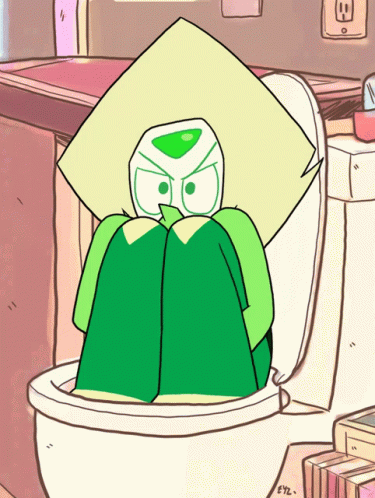 |
| 10 |
Lapis Lazuli |
Plus de 6 000 ans |
Aucune |
- Elle est très puissante et contrôle l'eau.
- Steven l'a libéré d'un miroir
- Elle vit dans une ferme avec Peridot.
|
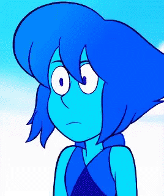 |